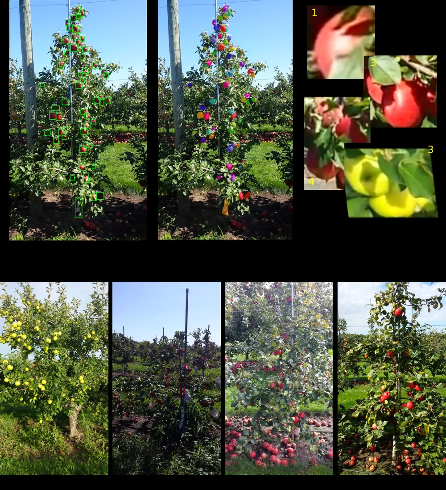
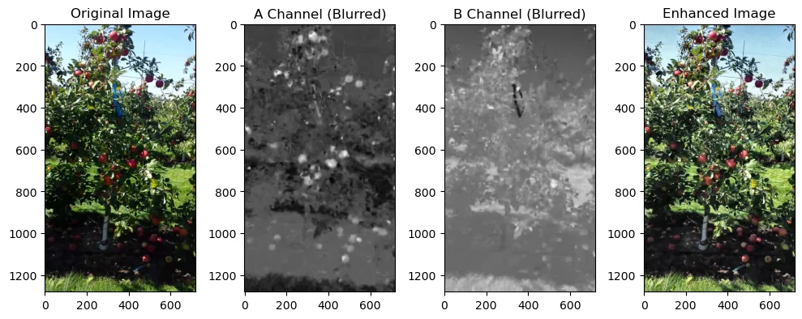

Machine vision
Detecting and counting apples in orchard imagery
Yield estimation from orchard imagery, split into three problems. Find the apples, count them, and separate the ones that are touching.

The orchard scene
Fruit hangs in clusters, and the boundary between two touching apples is a soft edge. Foliage hides most of the crop most of the time. The same variety looks very different depending on where the sun is. Windfall on the ground looks the same as fruit on the tree and must not be counted.
Small detection errors add up in the yield figure. A model with a good per-image metric can still be well out on the total.

What we built
This was a five-person team. I did the model training and evaluation.
- Training and prediction pipelines for Faster R-CNN and YOLO on the same dataset, with the same data handling for both.
- A LAB colour-space preprocessing stage, used as an input enhancement and as a non-learned baseline.
- Separate evaluation for detection, counting and segmentation, since they fail in different ways and a single mAP number hides that.
- A conversion step from polygon annotations to instance masks. This was most of the work.
What it showed
The results matched the literature. The single-stage detector was faster. The two-stage detector was better on small and partially occluded fruit. For yield estimation those fruit cause most of the counting error, so we valued accuracy over throughput.
← All projects